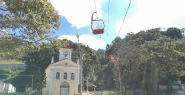
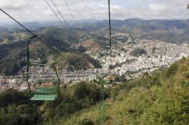
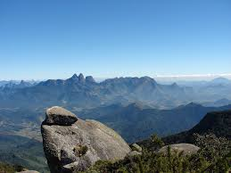
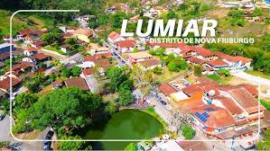

- praça do suspiro
- teléferico
- pico do caledônia
- lumiar
- são pedro da Serra

Um dos cartões-postais mais conhecidos de Nova Friburgo, a Praça do Suspiro é um espaço de lazer e convivência cercado por belas paisagens. O local reúne importantes elementos históricos e culturais da cidade, sendo um ponto muito visitado por turistas.

O teleférico proporciona uma vista privilegiada da cidade e das montanhas da região. O passeio é uma das experiências mais procuradas pelos visitantes, oferecendo belas paisagens e uma perspectiva única de Nova Friburgo.

Considerado um dos pontos mais altos do estado do Rio de Janeiro, o Pico da Caledônia encanta por suas vistas panorâmicas impressionantes. É um destino muito apreciado por amantes da natureza, do ecoturismo e da fotografia.

Lumiar é um charmoso distrito conhecido por suas paisagens naturais, rios de águas cristalinas e ambiente tranquilo. O local atrai visitantes que buscam contato com a natureza, esportes de aventura e momentos de descanso.

São Pedro da Serra é um distrito de Nova Friburgo conhecido por suas belas paisagens, clima agradável e tranquilidade. Cercado pela natureza, é um destino muito procurado para descanso e lazer na região serrana do Rio de Janeiro.